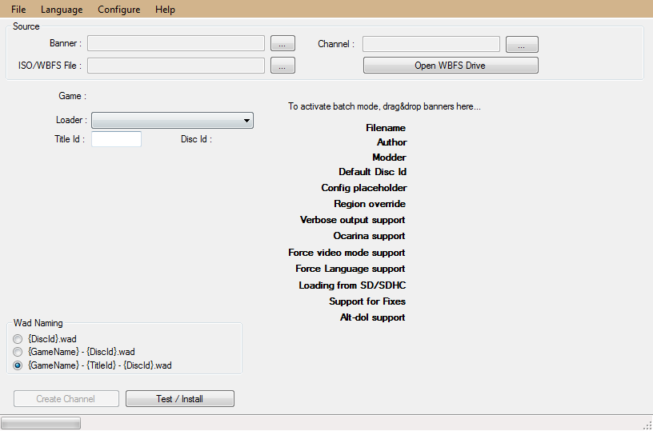

Open Crap (which you downloaded in the last step). You should be greeted by a screen like this:
When you have the tools, proceed to Step 1: Create a channel forwarder.
If you already have a base .wad you want to use, then skip to Step 2: Extracting banner resources.